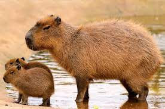
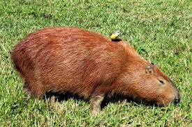
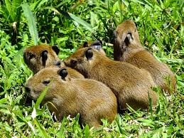
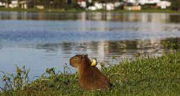

Reprodução
A gestação dura cerca de 150 dias, outro recorde entre os roedores. Em outras espécies de roedores, como ratos e coelhos, a gestação dura cerca de 30 dias. A fêmea de capivara possui de cinco a seis pares de tetas para alimentar seus filhotes.
Um filhote de capivara nasce pesando cerca de um quilo e meio, já com seus dentes permanentes e pelagem. Seguem recebendo o cuidado dos progenitores, em geral, da mãe, durante três a quatro meses até se tornarem independentes.

alimentação
A alimentação das capivaras é composta por ervas de pastagem complementadas, ocasionalmente, por plantas aquáticas.
Em alguns casos, quando a digestão não é concluída totalmente, alguns indivíduos praticam a coprofagia (ingestão das fezes). O alimento é digerido novamente e os nutrientes são ingeridos em sua totalidade.

Sobre
A capivara, nome
científico: Hydrochoerus
hydrochoeris,
também conhecido como
carpincho ou capincho, é
um animal, mamífero, roedor,
herbívoro, originário do
continente sul-americano.
O nome "capivara" tem origem
no idioma tupi e significa "
comedor de capim".
É a maior espécie
de roedor do mundo,
podendo chegar a 1,30 de
comprimento e a pesar até
cerca de noventa quilos.
Possui uma pelagem grossa,
castanha avermelhada.
Apesar de seu porte
grande, as capivaras,
em geral, são animais
calmos e dóceis.
Possuem hábitos semiaquáticos,
por isso possui como habitat
natural as margens de rios e
lagos, áreas alagáveis e
próximo a represas. Mesmo tendo desaparecido em
algumas localidades, a espécie não se encontra em
risco de extinção.

Hábitos
As capivaras são animais sociais, vivem geralmente em bandos de dez a vinte indivíduos às margens de rios, lagos, e áreas alagáveis. São encontradas em todos os países da América do Sul com exceção do Chile
De hábitos semiaquático, as capivaras possuem pequenas membranas entre os dedos, que ajudam no nado. Com isso, a espécie desenvolveu
uma forte relação com a água. A espécie utiliza lagos e rios para a regulação da temperatura corporal e, em geral, para a cópula reprodutiva.
